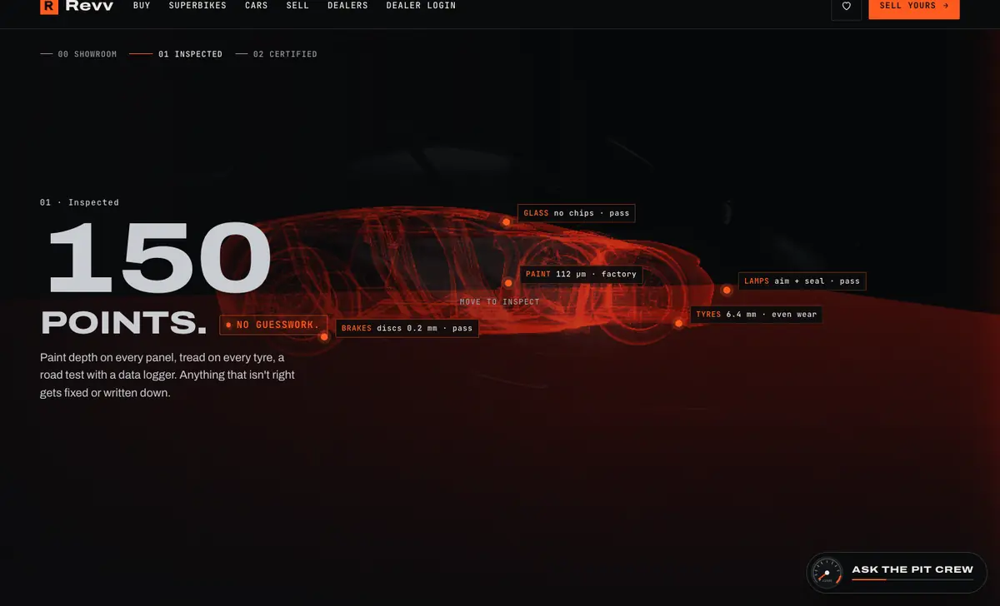
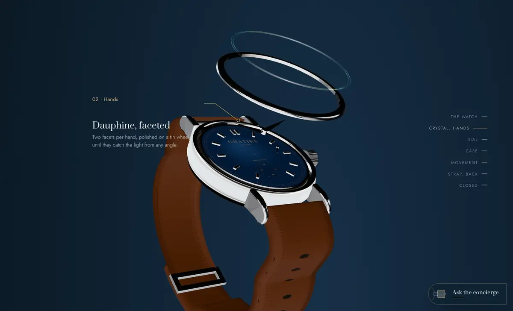
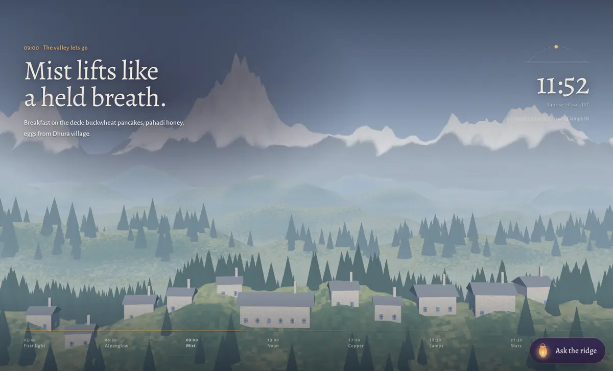

Portfolio 2026New Delhi
Abhishek Anand Masih, Operations & CRM Lead
Every mess is a system nobody has drawn yet.
- Every mess is a *system* nobody has drawn yet.
- Machines take me by *surprise* with great frequency.
- “It’s always been done this way” is a *bug report.*
- The first principle is that you must not *fool* yourself.
- *Curiosity* is my operating system.
- The best way to predict the future is to *invent* it.
- I collect *edge cases* while others collect assumptions.
I don’t build screens. I design systems.
Operations & CRM Lead
I build the CRM, website and automation a property, construction or service business runs on, and stay until the whole team uses it.
0/ 10 leads captured
One system. Every lead accounted for. See the work ↓
The work is in orbit. Fall in.
Eleven projects swing past as you scroll, and six of them are the real apps, running. Step inside any of them. First, if you like, name the mess in your own business and throw it in.
Start the fall ↓Skip to the list
0messes swallowed.
Past the horizon, the mess becomes a system. Configure yours.
Four steps, and a working app that follows them. Change the trade and it becomes a different product. Click around it, drag things, book things: every part reacts to the others.
Sample data throughout. Payments are in test mode: nothing here asks for card details.
Twenty-three projects, built and running.
Six built for clients, a 3D planning tool of my own, and sixteen websites and business systems I designed and built. Open any of them and use it.
Take a break. Five small games.
All of them are about the same thing as the rest of this page: leads that get lost, and what happens when they stop getting lost.
Lead Run
Fly the lead home. Dodge spreadsheets, missed calls and double entries; collect CRM, Website, Automation and 3D. Three lives.
Lead Run
Steer with your mouse, your finger or the arrow keys.
Sort the mess
Twenty-five seconds. File each note where it belongs before the next one lands.
Notes arrive from everywhere. Ready?
Pipeline sprint
Six leads, four stages. Click each one along until all six are won. Fastest time wins.
The 3D Lab.
Seven experiments you can turn around: product turntables, a room configurator, a property explorer and more. And the 3D that now lives inside the projects; each tile opens the live piece.

RevvA car under an X-ray inspection lens Aaranya ResidencesThree towers; pull a floor out like a drawer
Aaranya ResidencesThree towers; pull a floor out like a drawer SthiraA building that rises stage by stage
SthiraA building that rises stage by stage
GhatikaA watch that comes apart as you scroll
TaradhuraA ridge from dawn to starlight The black holeRay-marched, with projects in orbit
The black holeRay-marched, with projects in orbitHow a mess gets pulled into one system.
Five steps, always in this order. Nothing gets built until the team has been heard and the work has been mapped.
Listen
Sit with the team and watch the real work, in the words they use.
Map
Write down what feeds what: leads, listings, calls, quotes, tasks.
Decide
Agree the rules and what ships first, before anything is built.
Build
AI coding tools write the code under my direction. I test every change on desktop and phone.
Launch
Move the old records across, train the team, then measure how the system is used.
Working with me
- I’ll ask “why” a lot. It’s how I find the rule behind the work.
- I won’t oversell a feature nobody has used yet.
- I show real numbers from live systems.
- Quiet in the meeting, thorough in the plan.
Now: studying for a Bachelor of Computer Applications with an Agentic AI specialisation, and learning C so I can read the code my tools write as well as direct it.
What has landed so far, Nov 2026
4 yearsleading operations and building the systems teams run on
6 liveprojects: two CRMs, three websites and a 3D planning tool
3 monthsfrom first requirements to go-live on a custom CRM
6,089old records moved across, none rejected
Page 1on Google within 30 days of a relaunch
~19 hoursto rebuild and relaunch a website
Let’s build yours.
If the work lives in spreadsheets and a rented tool, I can map it, build one system for it, move your records across and train the team to use it. Open to roles and freelance work.